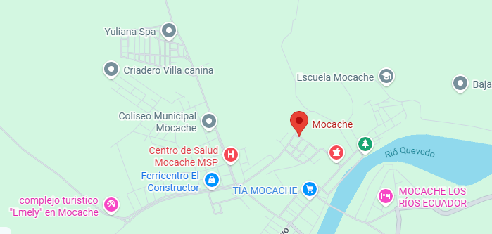

Reseña: Originalmente fue parroquia de Quevedo hasta su cantonización en 1996. Es una zona eminentemente agrícola y un bastión fundamental de la cultura, tradiciones y el rodeo montuvio en el Ecuador.
Urbanas: Mocache.
Rurales: No tiene parroquias rurales oficiales creadas por ordenanza, se maneja mediante recintos comunitarios.
Seco de gallina criolla cocinado en leña, tongas montuvias y bollos de pescado.
Río Mocache y sus recintos: Sus riberas ofrecen balnearios naturales de agua dulce muy visitados en época de verano y feriados.
Fincas Agroturísticas: Sitios dedicados a mostrar la vida del campo, paseos a caballo y la cosecha artesanal de cacao.
Hostal Mocache, Hospedaje El Descanso.
María Yenny Domínguez Kent.

42.000 habitantes.
